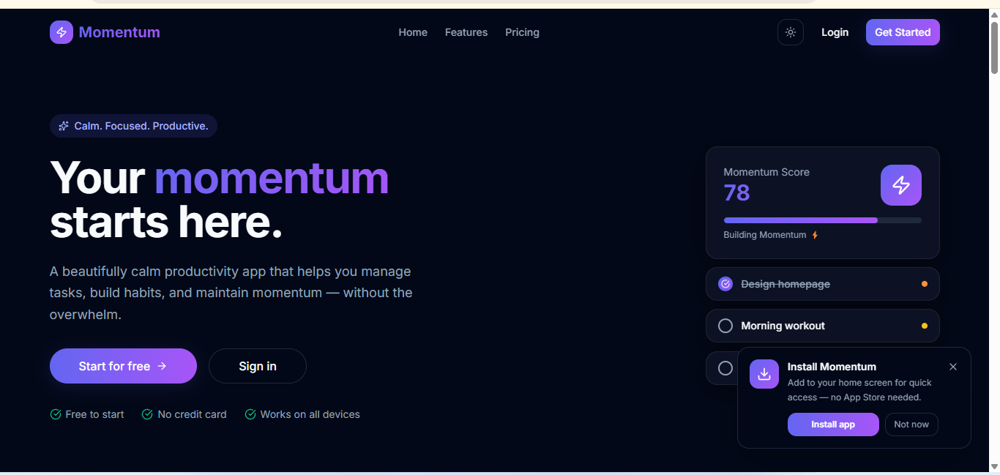

// Preview
Desktop & Mobile View

A clean, real-time productivity app that helps users build consistent habits and manage daily tasks — powered by React, Vite, Firebase, and Tailwind CSS, with seamless sync across all devices.

Momentum is a productivity app designed around one idea: small, consistent actions compound into real change. It gives users a clean space to track daily habits, manage tasks with priorities, and watch their streaks grow — all synced in real time via Firebase so nothing is ever lost between sessions or devices.
Built as a React SPA with Vite for blazing-fast development and Tailwind CSS for a polished, responsive UI — Momentum was crafted with as much attention to the micro-interactions and feel as to the underlying data architecture.
Most habit and task apps are either too bloated with features that overwhelm users, or too basic to provide real motivation. People start strong, lose their streak, and abandon the tool entirely. The challenge was building something that felt effortless to use daily — low friction to log, high reward to maintain.
I designed Momentum around minimal daily input: tap to log a habit, add a task in one step. Firebase Firestore handles real-time data persistence so users never lose progress. Firebase Auth provides secure, friction-free sign-in. Streak counters and visual progress indicators provide just enough gamification to keep users coming back.
Log daily habits with a single tap. Visual streak counters show how many days in a row you've stayed consistent.
Create, prioritise, and complete tasks with due dates and category labels to keep your day organised.
Gamified streaks reward consistency — breaking a streak is visible enough to motivate users to maintain it.
Firebase Firestore syncs data instantly across all devices — open the app on phone or desktop, always up to date.
Secure user authentication with Google Sign-In or email — each user's data is private and persistent.
Optimised for mobile-first use — because habits are logged on the go, not just at a desk.
Momentum delivered a polished, real-world productivity tool that demonstrates React state management at scale, Firebase integration, and thoughtful UX design. The project deepened my expertise in real-time databases, authentication flows, and building apps that feel genuinely good to use every day.
Full-stack agri-tech store for agricultural equipment, chemicals, pesticides, and farm supplies.